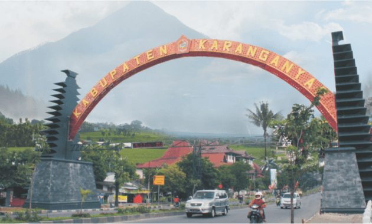

SEJARAH

Kabupaten Karanganyar merupakan sebuah wilayah di sebelah timur Kota Surakarta yang memiliki banyak
destinasi wisata. Nama Kabupaten Karanganyar memiliki sejarah panjang dari era kekuasaan Mataram Islam
hingga menjadi kabupaten. Konon, Karanganyar merupakan wilayah yang sangat penting bagi Pangeran
Sambernyawa atau Raden Mas Said. Dahulu, Karanganyar merupakan wilayah hutan belantara yang di dalamnya
terdapat sosok wanita bernama Nyi Ageng Karang.
Nama Kabupaten Karanganyar diberikan oleh Raden Mas Said yang dikenal dengan sebutan
Pangeran Sambernyawa. Sementara itu, Kabupaten Karanganyar berdiri pada 19 April 1945 atau tepatnya
sebelum Proklamasi Kemerdekaan Republik Indonesia. Konon, Karanganyar adalah nama dukuh kecil yang
berada di Kasunanan Surakarta pada saat pemerintahan Sri Pakubuwono II. Namun, setelah Perjanjian
Giyanti disepakati pada 1755, Karanganyar berada di bawah kekuasaan Kasultanan Yogyakarta. Saat itu,
Yogyakarta dipimpin oleh Pangeran Mangkubumi atau Hamengkubuwana I. Asal-usul nama Karanganyar terbentuk
dari 3 buah suku kata yang memiliki arti masing-masing.
Ka merupakan kependekan dari kalimat Bahasa Jawa “kawibawaning dipun gayuh” yang berarti kewibawaan yang telah dicita-citakan. Kemudian, Rang adalah kependerkan dari “Rangkepaning lahir bathin pulung lan wahyuning sampun turun-temurun” yang artinya rangkapnya lahir serta batin, pulung dan wahyunya telah turun. Adapun Anyar adalah kependekan dari “Badhenampi perjanjian anyar utawa enggal winisudha jumeneng Mangkunegoro I”.